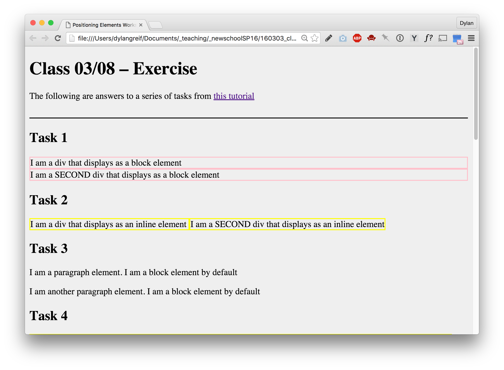

Assignment from 03-08
Finish in-class assignment
If you haven't yet, finish designing and coding example layouts for all of the layout types in the tutorial we went over in class. All examples should live in a single HTML document, with a page title and subtitle that describes what the page is. Every example should have a heading that indicates what it is in example of.
Submit: Submit your working folder containing your html and css files. Label the html file index.html and the folder firstname-1. Upload the folder to our shared google drive folder “Assignments” by 11:00AM next Tuesday.
Reimagined Quote
Design a web page that combines two of the quotes you chose for last week’s assignment. You have creative license to reimagine, deconstruct, and interweave the two quotes, thereby re-authoring their meaning.
To do this, you should experiment with the many layout types we covered in out 03-08 class. What if you broke the two quotes into fragments, and combined those fragments in different ways using the various layout techniques? Try using as many as you can, but be deliberate about how you use them.
Just like when you design anything, think about: balance, legibility, dynamism, softness, loudness, contrast... Play with: font size, scale, leading, alignments, margins...
The reimagined quote should begin with a title (what will the new title be?). Instead of an attribute, it should end with brief descriptive paragraph that explains who the originally authored the quotes, and that you re-interpreted them.
Submit: Submit your working folder containing your html and css files. Label the html file index.html and the folder firstname-2. Upload the folder to our shared google drive folder “Assignments” by 11:00AM next Tuesday.